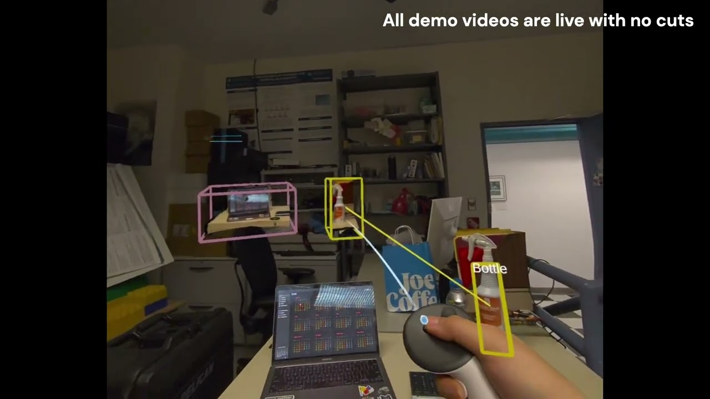

XR teleoperation with real-time 3D Gaussian splatting scene memory
I use 3D Gaussian splatting, a fast way to rebuild real objects in 3D from camera images, to bring the physical world into XR. On a Meta Quest 3, our pipeline digitizes real objects in 2–4 seconds without per-scene training, as interactive proxies that can be grabbed, inspected, and used to select the physical objects they came from. For teleoperation, a bimanual XR technique lets an operator give a robot high-level assembly goals as nested groups of object constraints, leaving choices such as where to build a subassembly to the robot software.